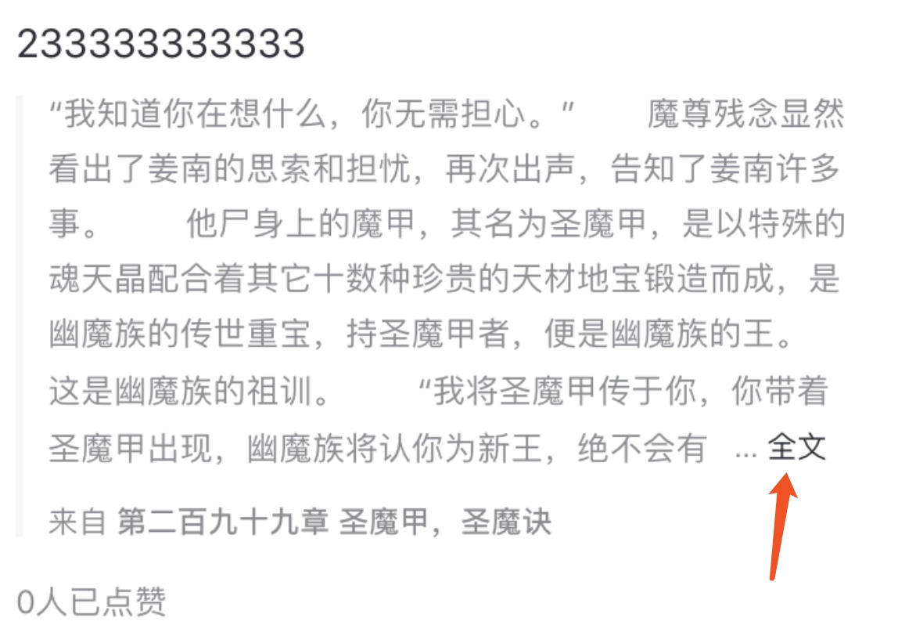

这种多行之后（最多显示几行），最后一行还显示不下的时候，要求有更多按钮（或者全文）这种需求很常见。实现方法也比较简单，结合 NSAttributeSring 和 YYLabel 就能很简单的实现。如果最后的“更多”或者“全文”按钮要求自提颜色或者大小不一样，单独处理这个样式即可
- (void)addSeeMoreButton {
NSMutableAttributedString *text = [[NSMutableAttributedString alloc] initWithString:@" ... 全文"];
//添加文字颜色
[text addAttribute:NSForegroundColorAttributeName value:kColor_black1 range:NSMakeRange(text.length-2, 2)];
[text addAttribute:NSForegroundColorAttributeName value:kColor_black2 range:NSMakeRange(0, text.length-2)];
YYLabel *seeMore = [YYLabel new];
seeMore.attributedText = text;
[seeMore sizeToFit];
NSMutableAttributedString *truncationToken = [NSMutableAttributedString attachmentStringWithContent:seeMore contentMode:UIViewContentModeCenter attachmentSize:seeMore.frame.size alignToFont:[UIFont systemFontOfSize:14] alignment:YYTextVerticalAlignmentCenter];
self.passageContentLabel.truncationToken = truncationToken;
}